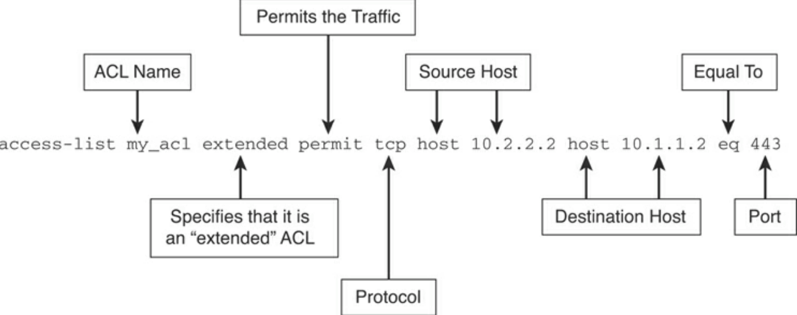
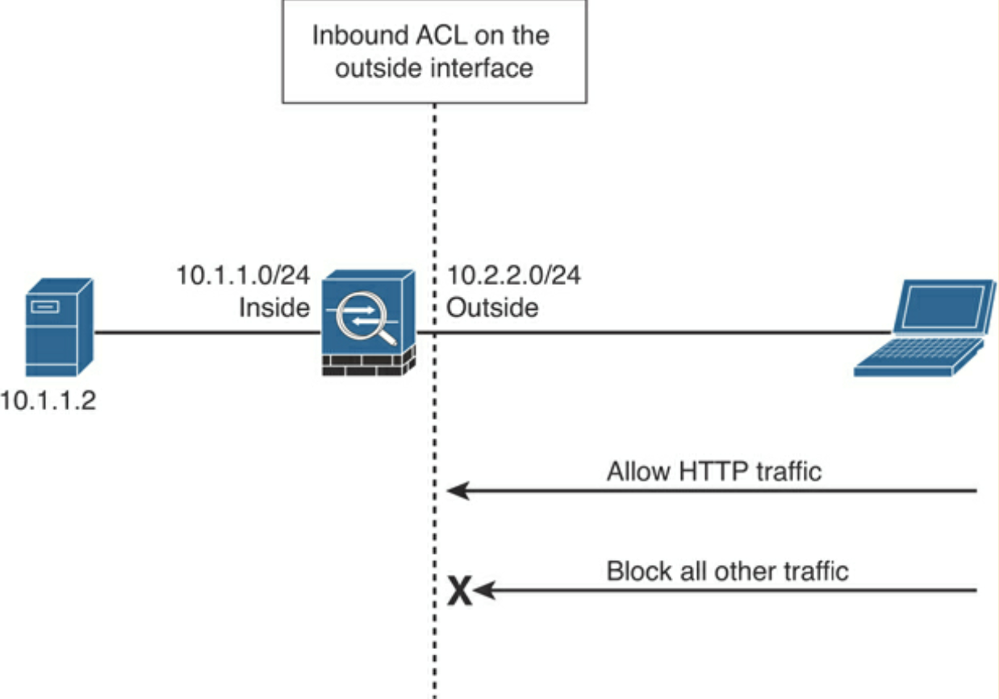
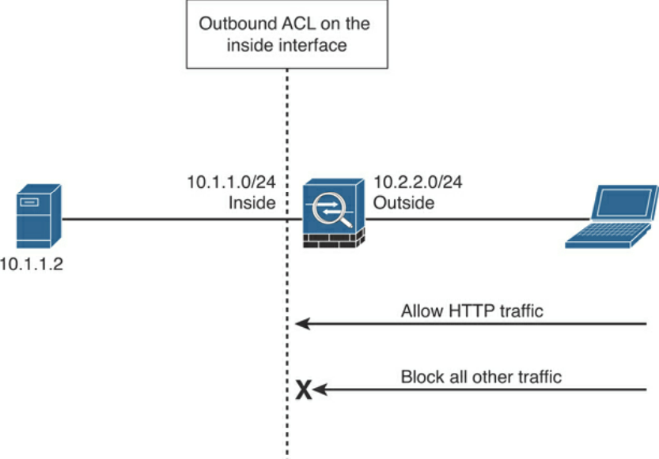
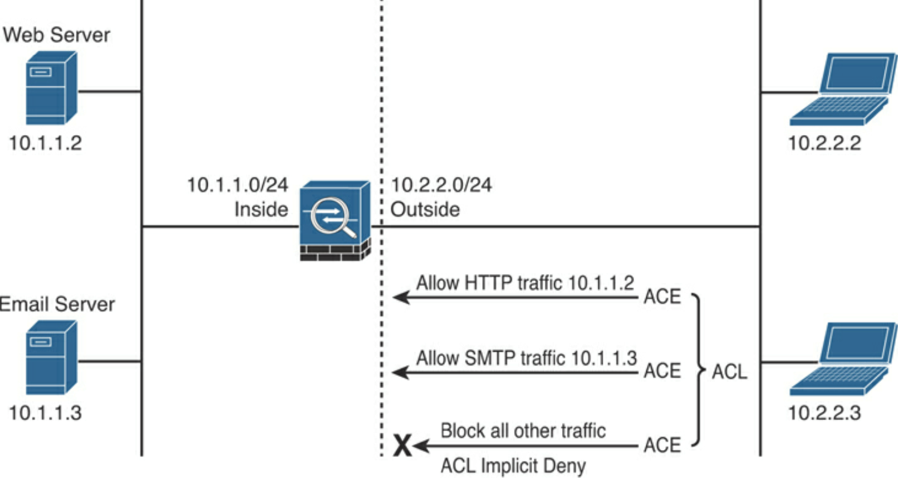

Implementing Access Control¶
ACLs in Cisco ASA¶
An ACL is a collection of security rules or policies that allows or denies packets after looking at the packet headers and other attributes. Each permit or deny statement in the ACL is referred to as an access control entry (ACE). These ACEs classify packets by inspecting Layer 2 through Layer 7 headers for a number of parameters, including the following:
Layer 2 protocol information such as EtherTypes
Layer 3 protocol information such as ICMP, TCP, or UDP
Layer 3 header information such as source and destination IP addresses
Layer 4 header information such as source and destination TCP or UDP ports
Layer 7 information such as application and system service calls
ACLs on the ASA:
ACLs get applied to an interface to filter traffic.
ASA filters inbound and outbound.
Inbound ACL - ASA analyses packets against the ACEs.
Outbound ACL - ASA inspects packets exiting out of interface, but not packets entering interface.
Permitted packets get processed by the ASA and the packet and passes out egress interface.
Denied packets get discarded and the ASA generates a syslog message.
You can apply only 1 extended ACL per direction of an interface.
You can apply an extended ACL and an EtherType ACL in the same direction, if running in transparent mode.
Return TCP/UDP traffic is not blocked from lower security-level higher security-level.
Return GRE/ESP traffic must be permitted on the ACL applied on respective interface.
Return ICMP traffic in ACL must be allowed or enable ICMP inspection.
ACLs include a five-tuple:
Source IP address (or subnet)
Source port
Destination IP address (or subnet)
Destination port
Protocol
Dissected ACL on ASA:
Inbound ACL:
Outbound ACL:
Characteristics of an ACL:
When a new ACE is added to an existing ACL, it is appended to the end of the ACL, unless a specific line number is specified.
When a packet enters the security appliance, the ACEs are evaluated in sequential order. Hence, the order of an ACE is critical. For example, if you have an ACE that allows all IP traffic to pass through, and then you create another ACE to block all IP traffic, the packets are never evaluated against the second ACE because all packets match the first ACE.
There is an implicit deny at the end of all ACLs. If a packet is not matched against a configured ACE, it is dropped and a syslog with message ID of 106023 is generated.
By default, you do not need to define an ACE to permit traffic from a high-security-level interface to a low-security-level interface. However, if you want to restrict traffic flows from a high-security-level interface destined to a low-security-level interface, you can define an ACL. If you configure an ACL for traffic originating from a high-security-level interface to a low-security-level interface, it disables the implicit permit from that interface. All traffic is now subject to the entries defined in that ACL.
An ACL must explicitly permit traffic traversing the Cisco ASA from a lower- to a higher-security-level interface of the firewall. The ACL must be applied to the lower-security-level interface or globally.
The ACLs (extended or IPv6) must be applied to an interface to filter traffic that is passing through the security appliance. Beginning with Cisco ASA Software version 9.0(1), you can use a single ACL to filter both IPv4 and IPv6 traffic.
You can bind one extended ACL and one EtherType ACL in each direction of an interface at the same time.
You can apply the same ACL to multiple interfaces. However, doing so is not considered to be a good security practice because correlating ACL hit counts to a specific interface’s traffic would be impossible.
You can use ACLs to control both traffic through the Cisco ASA and traffic to the security appliance. The ACLs that control traffic to the appliance are applied differently than ACLs that filter traffic through the appliance.
When TCP or UDP traffic flows through the security appliance, the return traffic is automatically allowed to pass through because the connections are bidirectional.
Other protocols such as ICMP are considered unidirectional connections, so you need to allow ACL entries in both directions. However, when you enable the ICMP inspection engine, the inspection engine keeps track of the ICMP messages and then allows replies (such as ping packets).
Four types of ACLs:
Standard
Based on destination IP Address.
Used in split-tunnels and route-distribution in route maps.
Cannot be applied to interface for traffic filtering.
Can only be used if device is in routed mode.
Extended
Attributes:
Source and Destination IP Addresses
Layer 3 Protocols
Source and/or Destination TCP and UDP ports
Destination ICMP type for ICMP packets
User identity attributes such as AD username or group membership
Used for interface packet filtering, QoS classification, NAT, VPN encryption, etc.
Can be used in both routed and transparent modes.
EtherType
Filter IP and non-IP-based traffic, checking the Ethernet type code (0x800 is IP) in L2 header. Novell IPX, for example uses 0x8137/8
Can be used only if device is in transparent mode.
Implicit deny does not affect IP traffic, therefore, can be applied in each direction of interface, unless one inputs an explicit deny.
Webtype
Restrict traffic coming through SSL VPN.
Implicit deny if ACL configured, else all allowed.
ASA Extended ACL topology:
Security-Levels:
100 most secure (
nameif insidewill automatically setsecurity-levelto 100)0 leaast secure (
nameif outsidewill automatically setsecurity-levelto 0)Input``same-security-traffic permit inter-interface`` global config command to allow what it says…
ACL example, allowing 10.2.2.2 & 3 to reach 10.1.1.2 on http & 209.165.202.132 on smtp:
asa# conf t
asa(config)# access-list outside_in extended permit tcp host 10.2.2.2 host 10.1.1.2 eq http
asa(config)# access-list outside_in extended permit tcp host 10.2.2.3 host 10.1.1.2 eq http
asa(config)# access-list outside_in extended permit tcp host 10.2.2.2 host 209.165.202.132 eq smtp
asa(config)# access-list outside_in extended permit tcp host 10.2.2.3 host 209.165.202.132 eq smtp
asa(config)# access-list outside_in extended deny ip any any log
asa(config)# access-group outside_in in interface outside
Cisco ASA Application Inspection¶
Stateful inspection keeps info about each connection traversing ASA & examines packet header and contents of packet in application layer.
Applications and protocols and secondary channels on dynamically assigned ports that embedded IP Address information in the data payload of the packet require inspection, which allows for NAT to work and update any other fields or checksums.
ASA identifies dynamic port assignments and allows data exchange on ports during connection.
Modular Policy Framework (MPF) is provided by ASA for QoS. MPF is flexible and simple, similar to IOS Modular QoS CLI.
Configuration Steps:
Configure traffic classes to identify interesting traffic.
Associate actions to each traffic class to create service policies.
Activate the service policies on an interface or globally.
Commands of the MPF:
class-map: classifies traffic for inspection. Various types of match criteria in a class map can be used to classify traffic. The primary criterion is the use of an access control list (ACL).policy-map: configures security or QoS policies. A policy consists of a class command and its associated actions. Additionally, a policy map can contain multiple policies.service-policy: activates a policy map globally (on all interfaces) or on a targeted interface.
Application inspection example:
asa(config)# access-list tftptraffic permit udp any any eq 69
asa(config)# class-map TFTPclass
asa(config-cmap)# match access-list tftptraffic
asa(config-cmap)# exit
asa(config)# policy-map tftppolicy
asa(config-pmap)# class TFTPclass
asa(config-pmap-c)# inspect tftp
asa(config-pmap-c)# exit
asa(config-pmap)# exit
asa(config)# service-policy tftppolicy global
To-the-Box Traffic Filtering in Cisco ASA¶
Management access rules apply to traffic that terminate on the ASA. Guidelines:
Traffic filtering requires you to configure an ACL and then apply the ACL to the appropriate interface, using the
control-planekeyword at the end, which tells the ASA to block the specified traffic destined for the ASA.The ACL cannot be applied to an interface designated as a
management-onlyinterface.Management-specific protocols provide their own control-plane protection and have higher precedence than a to-the-box traffic-filtering ACL. For example, if you allow a host to establish an SSH session (by defining its IP address in the
sshcommand) and then block its IP address in the management access rule, the host can establish an SSH session to the security appliance.
Example of management access rule:
asa# conf t
asa(config)# access-list outside_access_in_1 remark Blocking all Management Traffic on the Outside Interface
asa(config)# access-list outside_access_in_1 extended deny ip any any
asa(config)# access-group outside_access_in_1 in interface outside control-plane
Object Grouping and Other ACL Features¶
Advanced packet-filtering features:
Object grouping
Group similar items together to reduce ACEs.
show access-listreveals the individual ACEs regardless of grouping.Hierarchical/nested grouping can take place.
Types that can be grouped:
Protocol
Network
Service
Local user group
Security group
ICMP type
Standard ACLs
Time-based ACLs
Downloadable ACLs
Standard ACLs¶
asa(config)# access-list Dest-Net standard permit host 192.168.88.10 asa(config)# access-list Dest-Net standard permit 192.168.20.0 255.255.255.0 asa(config)# access-list Dest_Net standard deny any ! application of standard ACL to OSPF route map asa(config)# route-map OSPFMAP permit 10 asa(config-route-map)# match ip address Dest_Net
Time-Based ACLs¶
Prevent access based on the preconfigured time intervals.
NTP config is recommended.
Can be used with extended, IPv6 and Webtype ACLs
Applies only to new connections.
Types of time restrictions (absolute evaluated before periodic):
Absolute: has start and end time. If no start time stipulated, ASA applies immediately. If no end time stipulated, ASA applies ACL forever. Only one
absoluteparameter allowed at a time.Periodic: values based on recurring events. Only allow things during specific hours. Use of weekdays.
ICMP Filtering in Cisco ASA¶
Interface ACLs can block all ICMP traffic.
Allowed by default.
Control-plane ACL or ICMP policies (
icmpcommand) control ICMP.Processed in sequential order, implicit deny at end.
ICMP traffic filtering takes precedence over control-plane filtering.
ICMP filtering example:
asa(config)# icmp deny any echo outside
asa(config)# icmp permit any outside
Network Address Translation in Cisco ASA¶
Hide internal addressing from outside by showing different IP address spaces.
Deployment examples:
You use a private addressing scheme internally and want to assign global routable addresses to those hosts.
You change to a service provider that requires you to modify your addressing scheme.
Rather than redesigning the entire IP infrastructure, you implement translation on the border appliance.
For security reasons, you do not want to advertise the internal addressing scheme to the outside hosts.
You have multiple internal networks that require Internet connectivity through the security appliance, but only one global address (or a few) is available for translation.
You have overlapping networks in your organisation and you want to provide connectivity between the two without modifying the existing addressing scheme.
One-to-one address mapping when packet traverses ASA and matches criteria for translation.
The ASA either assigns a static IP Address (static NAT) or allocates an address from a pool of addresses (dynamic NAT)
Internal address gets translated to global address when packets go to the public network (inside NAT).
Two types of NAT:
Network Address Translation (NAT)
Port Address Translation (PAT)